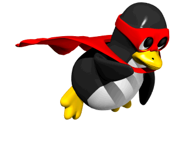
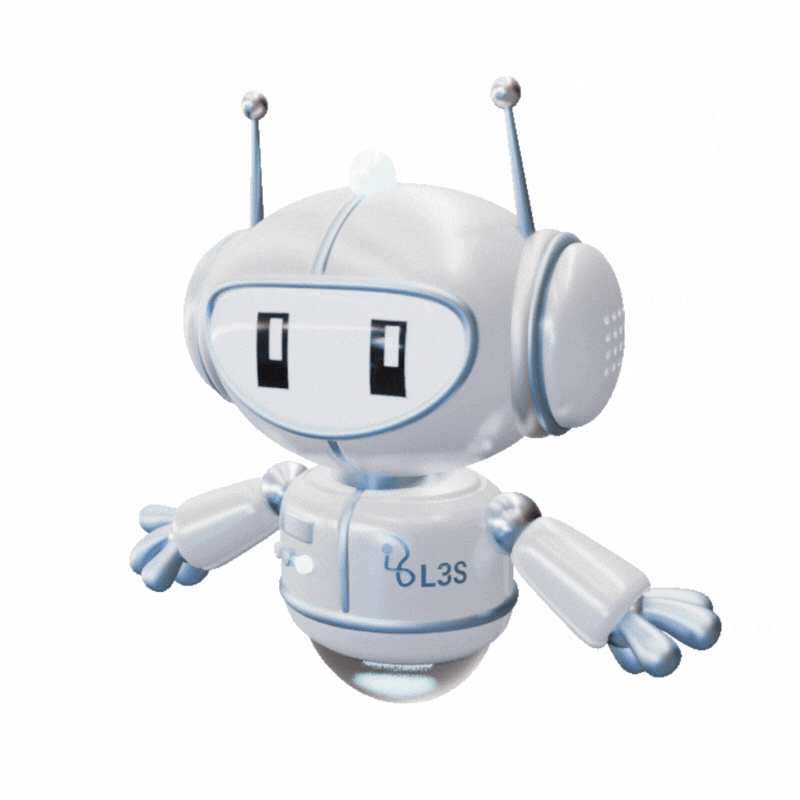
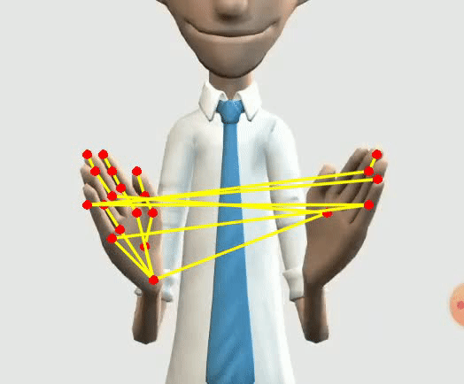

Engenheiro de Sistemas Complexos | Pesquisador em Ciência da Computação

Profissional da área de computação com atuação multidisciplinar, interessado no desenvolvimento de sistemas complexos, pesquisa, infraestrutura, segurança, inteligência artificial e robótica.
Minha principal característica é a curiosidade por compreender como diferentes áreas da computação podem trabalhar juntas para resolver problemas reais.



Trabalhar com pesquisa, engenharia e desenvolvimento de tecnologias capazes de gerar inovação e contribuir para a sociedade.
Busco unir conhecimento científico e experiência técnica para projetar soluções complexas e liderar projetos multidisciplinares.